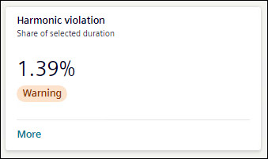
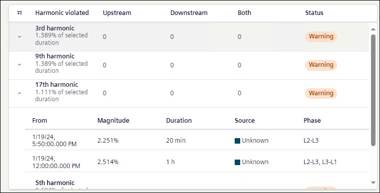
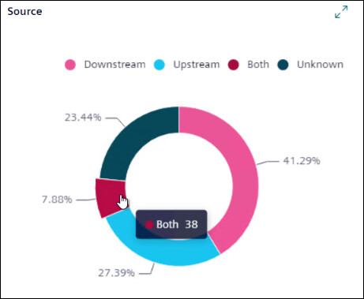
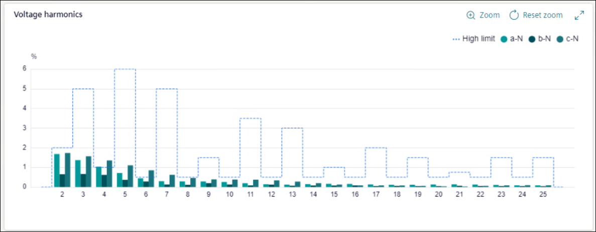

Harmonic violation

Harmonics violation tile shows the percentage of hours harmonic violations occurred over the selected timeline. The tile shows the status of harmonics variation as All Ok, Warning, or Limit violated as per Grid code EN 50160.
To view further details of Harmonics violations, click More. Details for harmonics violation are shown in the form of table, doughnut chart, and bar chart.

Harmonics violations are shown as a table with list of violated and warning harmonics.
Harmonics Violated: Shows the list of all the violated harmonics in order with percentage of time that harmonic appeared. To sort list by number of harmonics, click Harmonics Violated.
NOTE: The harmonic displayed (odd, even or both) depends on device configuration.
Upstream: Shows the number of variations due to upstream source in selected time period.
Downstream: Shows the number of variations due to downstream source in selected time period.
Both: Shows the number of variations due to upstream and downstream source in selected time period.
Click on arrow on left to get further more information on any harmonic.
From: Shows start time for selected variation.
Magnitude: Shows magnitude of variation.
Duration: Shows duration for which selected variation lasted.
Source: Shows the source (upstream, downstream, or both) of the variation.
Phase: Shows for which phase variation has appeared.

A doughnut chart shows the percentage of the harmonic variation caused due to upstream, downstream, both, and unknown sources. Hover mouse on any of source to know the number of violations caused due to that source.
Upstream: The harmonic is provided to the system by an external source.
Downstream: The harmonic is generated inside the system relative to the measuring point.
Both: The harmonic is generated by the system on one phase and the harmonic is being provided to the system on another phase.
Unknown: The harmonic direction cannot be determined by the system either because the device does not support the measurement of the harmonic direction or the system is not stable enough to provide an accurate measurement of the direction.

For Voltage harmonics graph, X-axis shows the magnitude of harmonic in percentage and Y-axis shows the harmonic order. Dotted line shows upper limit for the harmonic based on EN 50160. Hover mouse on bar chart to get details.
NOTE: The order of graph is based on device configuration and phases shown are based on the network configuration.